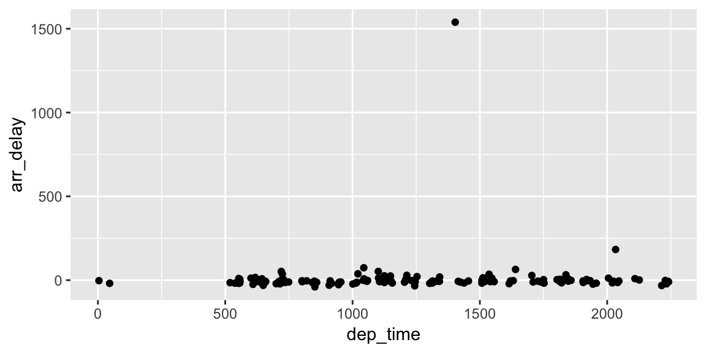

Chapter 2 R Markdown Basics
Here is a brief introduction to using R Markdown. Markdown is a simple formatting syntax for authoring HTML, PDF, and MS Word documents. R Markdown provides the flexibility of Markdown with the implementation of R input and output. For more details on using R Markdown see http://rmarkdown.rstudio.com.
Be careful with your spacing in Markdown documents. While whitespace largely is ignored, it does at times give Markdown signals as to how to proceed. As a habit, try to keep everything left aligned whenever possible, especially as you type a new paragraph. In other words, there is no need to indent basic text in the Rmd document (in fact, it might cause your text to do funny things if you do).
2.1 Lists
It’s easy to create a list. It can be unordered like
- Item 1
- Item 2
or it can be ordered like
- Item 1
- Item 2
Notice that I intentionally mislabeled Item 2 as number 4. Markdown automatically figures this out! You can put any numbers in the list and it will create the list. Check it out below.
To create a sublist, just indent the values a bit (at least four spaces or a tab). (Here’s one case where indentation is key!)
- Item 1
- Item 2
- Item 3
- Item 3a
- Item 3b
2.2 Line breaks
Make sure to add white space between lines if you’d like to start a new paragraph. Look at what happens below in the outputted document if you don’t:
Here is the first sentence. Here is another sentence. Here is the last sentence to end the paragraph. This should be a new paragraph.
Now for the correct way:
Here is the first sentence. Here is another sentence. Here is the last sentence to end the paragraph.
This should be a new paragraph.
2.3 R chunks
When you click the Knit button above a document will be generated that
includes both content as well as the output of any embedded R code chunks
within the document. You can embed an R code chunk like this (cars is a
built-in R dataset):
speed dist
Min. : 4.0 Min. : 2.00
1st Qu.:12.0 1st Qu.: 26.00
Median :15.0 Median : 36.00
Mean :15.4 Mean : 42.98
3rd Qu.:19.0 3rd Qu.: 56.00
Max. :25.0 Max. :120.00 2.4 Inline code
If you’d like to put the results of your analysis directly into your discussion, add inline code like this:
The
cosof \(2 \pi\) is 1.
Another example would be the direct calculation of the standard deviation:
The standard deviation of
speedincarsis 5.2876444.
One last neat feature is the use of the ifelse conditional statement which
can be used to output text depending on the result of an R calculation:
The standard deviation is less than 6.
Note the use of > here, which signifies a quotation environment that will be
indented.
As you see with $2 \pi$ above, mathematics can be added by surrounding the
mathematical text with dollar signs. More examples of this are in Mathematics
and Science if you uncomment the code in Math.
2.5 Including plots
You can also embed plots. For example, here is a way to use the base R graphics package to produce a plot using the built-in pressure dataset:

Note that the echo=FALSE parameter was added to the code chunk to prevent
printing of the R code that generated the plot. There are plenty of other
ways to add chunk options. More information is available at
http://yihui.name/knitr/options/.
Another useful chunk option is the setting of cache=TRUE as you see here. If
document rendering becomes time consuming due to long computations or plots
that are expensive to generate you can use knitr caching to improve
performance. Later in this file, you’ll see a way to reference plots created in
R or external figures.
2.6 Loading and exploring data
Included in this template is a file called flights.csv. This file includes a
subset of the larger dataset of information about all flights that departed
from Seattle and Portland in 2014. More information about this dataset and its
R package is available at http://github.com/ismayc/pnwflights14. This
subset includes only Portland flights and only rows that were complete with no
missing values. Merges were also done with the airports and airlines data
sets in the pnwflights14 package to get more descriptive airport and airline
names.
We can load in this data set using the following command:
The data is now stored in the data frame called flights in R. To get a
better feel for the variables included in this dataset we can use a variety of
functions. Here we can see the dimensions (rows by columns) and also the names
of the columns.
[1] 52808 16 [1] "month" "day" "dep_time" "dep_delay"
[5] "arr_time" "arr_delay" "carrier" "tailnum"
[9] "flight" "dest" "air_time" "distance"
[13] "hour" "minute" "carrier_name" "dest_name" Another good idea is to take a look at the dataset in table form. With this dataset having more than 50,000 rows, we won’t explicitly show the results of the command here. I recommend you enter the command into the Console after you have run the R chunks above to load the data into R.
While not required, it is highly recommended you use the dplyr package to
manipulate and summarize your data set as needed. It uses a syntax that is easy
to understand using chaining operations. Below I’ve created a few examples of
using dplyr to get information about the Portland flights in 2014. You will
also see the use of the ggplot2 package, which produces beautiful,
high-quality academic visuals.
We begin by checking to ensure that needed packages are installed and then we load them into our current working environment:
The example we show here does the following:
Selects only the
carrier_nameandarr_delayfrom theflightsdataset and then assigns this subset to a new variable calledflights2.Using
flights2, we determine the largest arrival delay for each of the carriers.
A useful function in the knitr package for making nice tables in R Markdown
is called kable. It is much easier to use than manually entering values into
a table by copying and pasting values into Excel or LaTeX. This again goes to
show how nice reproducible documents can be! (Note the use of results="asis",
which will produce the table instead of the code to create the table.) The
caption.short argument is used to include a shorter title to appear in the
List of Tables.
| Airline | Max Arrival Delay |
|---|---|
| Alaska Airlines Inc. | 338 |
| American Airlines Inc. | 1539 |
| Delta Air Lines Inc. | 651 |
| Frontier Airlines Inc. | 575 |
| Hawaiian Airlines Inc. | 407 |
| JetBlue Airways | 273 |
| SkyWest Airlines Inc. | 421 |
| Southwest Airlines Co. | 694 |
| United Air Lines Inc. | 472 |
| US Airways Inc. | 347 |
| Virgin America | 366 |
The last two options make the table a little easier-to-read.
We can further look into the properties of the largest value here for American
Airlines Inc. To do so, we can isolate the row corresponding to the arrival
delay of 1539 minutes for American in our original flights dataset.
dep_time dep_delay arr_time tailnum flight dest air_time distance
1 1403 1553 1934 N595AA 1568 DFW 182 1616We see that the flight occurred on March 3rd and departed a little after 2 PM on its way to Dallas/Fort Worth. Lastly, we show how we can visualize the arrival delay of all departing flights from Portland on March 3rd against time of departure.

2.7 Additional resources
Markdown Cheatsheet - https://github.com/adam-p/markdown-here/wiki/Markdown-Cheatsheet
R Markdown Reference Guide - https://www.rstudio.com/wp-content/uploads/2015/03/rmarkdown-reference.pdf
Introduction to
dplyr- https://cran.rstudio.com/web/packages/dplyr/vignettes/introduction.htmlggplot2Documentation - http://docs.ggplot2.org/current/